Urban design history · midterm guide
Antik Yunan'dan City Beautiful'a 2500 yıllık kent tasarımı tek sayfada. Önce özeti oku, plan ve diyagramlara bak, sonra 69 soruda kendini dene.
2500 years of urban design from Ancient Greece to the City Beautiful on one page: read the summary, study the plans, then test yourself with 69 questions.
Bu tablo Barok, Haussmann ve City Beautiful sunumlarının başında tekrar ediyor. Ezberle; sınavda büyük ihtimalle doldurtulur.
| Yıl | Yer | Planı yaptıran / öneren / yapan |
|---|---|---|
| 1585–1590 | Roma | Domenico Fontana'nın planı (Papa Sixtus V'in yaptırdığı) |
| 1661 | Versailles | Kralın (XIV. Louis) yaptırdığı barok plan |
| 1671 | Versailles | XIV. Louis döneminde kraliyet kentinin gelişimi |
| 1791 | Washington DC | Pierre L'Enfant'ın planı |
| 1852/53–1870 | Paris | Napoleon III; Haussmann'ın planı |
| 1858 | Central Park | Frederick Law Olmsted ve Calvert Vaux |
| 1893 | Chicago, World Columbian Exp. | Burnham ve Olmsted'in Beyaz Kenti (White City) |
| 1898 | Bahçe Kent | Ebenezer Howard |
| 1902 | Washington DC | McMillan Planı: L'Enfant planının revizyonu (Burnham, McKim, Olmsted Jr.) |
| 1903 | Letchworth | Howard'ın önerisiyle gerçekleşen bahçe kent (Parker & Unwin) |
| 1920 | Welwyn | Bahçe kent örneği (Louis de Soissons) |
This table is repeated at the start of the Baroque, Haussmann and City Beautiful lectures. Memorise it; it is very likely to appear in the exam.
| Year | Place | Commissioned / proposed / made by |
|---|---|---|
| 1585–1590 | Rome | Plan by Domenico Fontana (commissioned by Pope Sixtus V) |
| 1661 | Versailles | Baroque plan commissioned by the King (Louis XIV) |
| 1671 | Versailles | Growth of the royal town under Louis XIV |
| 1791 | Washington DC | Pierre L'Enfant's plan |
| 1852/53–1870 | Paris | Napoleon III; Haussmann's plan |
| 1858 | Central Park | Frederick Law Olmsted and Calvert Vaux |
| 1893 | Chicago, World's Columbian Exp. | Burnham and Olmsted's White City |
| 1898 | Garden City | Ebenezer Howard |
| 1902 | Washington DC | McMillan Plan: revision of L'Enfant's plan (Burnham, McKim, Olmsted Jr.) |
| 1903 | Letchworth | Garden city built on Howard's proposal (Parker & Unwin) |
| 1920 | Welwyn | Garden city example (Louis de Soissons) |
Ana fikir: Yunan kenti topoğrafyaya uyar ve akropolis ile agora etrafında örgütlenir. Roma kenti ise askeri kamp (castrum) mantığıyla iki ana caddenin kesiştiği ızgaraya oturur; bu iz bugünkü Avrupa kentlerinde hâlâ okunur (Plovdiv, Verona, İznik, Floransa, Tarragona).
Akropolis (tepe, kutsal/savunma) · Agora (kamusal toplanma, ticaret) · Stoa (sütunlu galeri) · Tiyatro · Bouleuterion (kent meclisi) · Tapınaklar · Asklepieion (sağlık kompleksi) · Nekropol · Nymphaeum (anıtsal çeşme) · Odeion · Gymnasium · Palestra · Stadion.
Izgara planlı Yunan kentleri: Pire (Atina'ya Uzun Duvarlarla bağlı), Milet MÖ 5. yy (yarımadada ızgara, üç agora, Didyma'ya kutsal yol), Priene MÖ 4. yy (Aydın; dik yamaçta ızgara, yapı adaları 30–50 × 80–120 m).
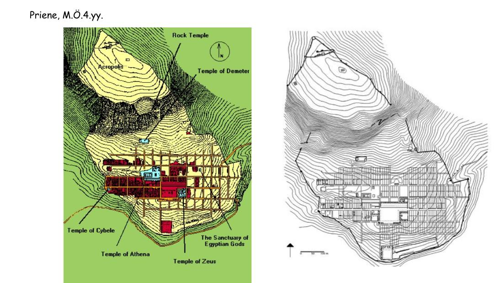
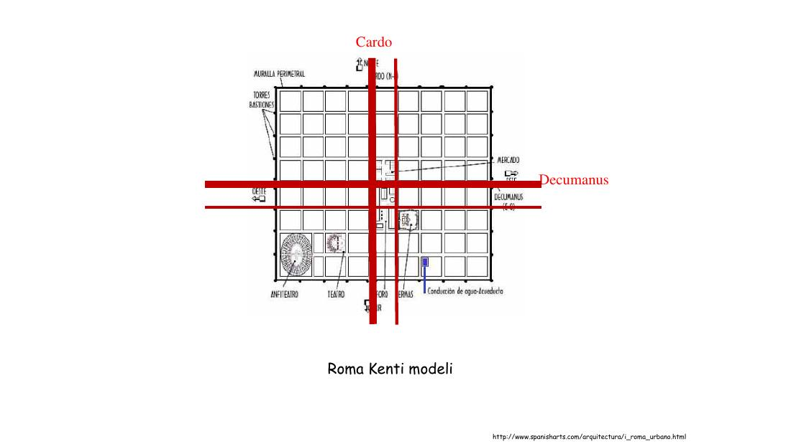
Ayrıca: Roma toplum piramidi (Patrisyen, Pleb, Azatlı, Köle); Romalılar evi uyumak için kullanır, günü kamusal alanlarda geçirir. Timgad (Trajan, MS ~100) en iyi ızgara örneği. Ankara: Augustus Tapınağı MÖ 25, Hacı Bayram Camii yanında, UNESCO geçici listesi.
Main idea: The Greek city adapts to topography and is organised around the acropolis and the agora. The Roman city follows the logic of the military camp (castrum): a grid set on two crossing main streets. That trace can still be read in today's European cities (Plovdiv, Verona, İznik, Florence, Tarragona).
Acropolis (hilltop, sacred/defensive) · Agora (public gathering, trade) · Stoa (colonnaded gallery) · Theatre · Bouleuterion (council house) · Temples · Asklepieion (health complex) · Necropolis · Nymphaeum (monumental fountain) · Odeion · Gymnasium · Palaestra · Stadion.
Grid-planned Greek cities: Piraeus (linked to Athens by the Long Walls), Miletus, 5th c. BC (grid on a peninsula, three agoras, sacred way to Didyma), Priene, 4th c. BC (Aydın; grid on a steep slope, blocks 30–50 × 80–120 m).
Also: Roman social pyramid (patricians, plebeians, freedmen, slaves); Romans used the house mainly to sleep and spent the day in public spaces. Timgad (Trajan, c. AD 100) is the best grid example. Ankara: Temple of Augustus, 25 BC, next to Hacı Bayram Mosque, on UNESCO's tentative list.
Roma'nın çöküşünden sonra kent yaşamı ~400–500 yıl zayıfladı; 10. yy'dan sonra ticaret canlanınca kentler geri geldi. Elemanlar: sur, kapılar, pazar meydanı, kilise meydanı, belediye meydanı, dar sokaklar, bahçeli parseller. En önemli yol: kent kapısı → pazar meydanı aksı.
| Morris'in sınıflaması | Başlangıç | Örnek |
|---|---|---|
| 1. Roma kökenli | Eski forum pazar meydanı olur | Floransa, Verona (Piazza Erbe) |
| 2. Burgs | Askeri kale → ticaret → kent | Edinburgh, Salzburg |
| 3. Organik köy | Köy → pazar → kent | Ghent, Siena, Bruges |
| 4. Bastide | 13. yy, Fransa-İngiltere, ızgara planlı | Monpazier, Aigues-Mortes |
| 5. Planted towns | Kral/lordların bilinçli kurduğu | Lübeck, Freiburg, New Winchelsea |
| 6. Manastır kentleri* | Manastır çevresinde | St. Gallen, Westminster, Cluny |
* Morris 5 kategori der; 6.'yı başka tarihçiler ekler.
İslam kenti: sokak hiyerarşisi ana caddeden çıkmaz sokağa iner (Tunus medinesi); Córdoba, Selanik; Martina Franca'nın organik dokusu "İslam kenti mi?" sorusuyla gösterildi.
Şam Emevi Camii alanının katmanları: Arami Hadad Tapınağı → Helenistik Zeus-Hadad Tapınağı → Roma Jüpiter Tapınağı (1.–3. yy) → Bizans Aziz Yahya Bazilikası → Emevi Camii (705–715). Temenos = duvarlı kutsal alan, peribolos = duvarlı kutsal avlu. Roma ızgarası (Via Recta / Doğru Sokak) zamanla çıkmaz sokaklı İslam dokusuna dönüştü.
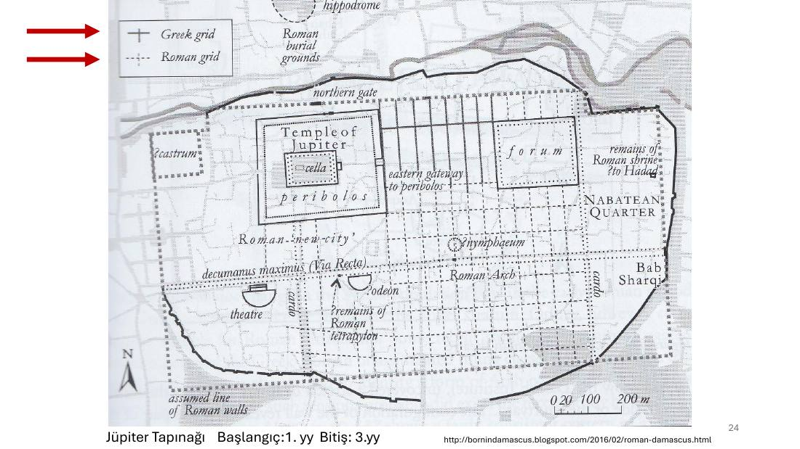
After the fall of Rome urban life weakened for ~400–500 years; cities returned when trade revived after the 10th century. Elements: walls, gates, market square, church square, town-hall square, narrow streets, plots with gardens. Most important route: city gate → market square.
| Morris's classification | Origin | Example |
|---|---|---|
| 1. Roman origin | The old forum becomes the market square | Florence, Verona (Piazza Erbe) |
| 2. Burgs | Fortress → trade → town | Edinburgh, Salzburg |
| 3. Organic village | Village → market → town | Ghent, Siena, Bruges |
| 4. Bastide | 13th c., France-England, grid plan | Monpazier, Aigues-Mortes |
| 5. Planted towns | Deliberately founded by kings/lords | Lübeck, Freiburg, New Winchelsea |
| 6. Monastic towns* | Around a monastery | St. Gallen, Westminster, Cluny |
* Morris gives 5 categories; the 6th was added by other historians.
The Islamic city: a street hierarchy descending from main street to cul-de-sac (medina of Tunis); Córdoba, Thessaloniki; the organic fabric of Martina Franca was shown with the question "an Islamic city?".
Layers of the Umayyad Mosque site, Damascus: Aramaean Temple of Hadad → Hellenistic Temple of Zeus-Hadad → Roman Temple of Jupiter (1st–3rd c.) → Byzantine Basilica of St John → Umayyad Mosque (705–715). Temenos = walled sacred precinct, peribolos = walled sacred court. The Roman grid (Via Recta / Straight Street) gradually turned into the cul-de-sac fabric of the Islamic city.
Bağlam: Floransa, 1420 · Vitruvius ~1412'de keşfedildi · Alberti 1452 · 1453 İstanbul · 1516 More. İdeal kent: merkez + ışınsal yollar + çokgen sur, savunma odaklı.
Vitruvius: sekizgen sur, köşelerde kuleler, 4 kenarda kapı, merkezde forum, kulelere giden 8 cadde (ters rüzgârlara karşı; askeri önem).
Filarete (Antonio Averlino) – Sforzinda (1460–65): ilk tamamen planlanmış ideal kent; adı patron Sforza'dan. Üst üste iki kare → sekizgen yıldız, 16 radyal cadde (biri sukemeri), ring yol, merkez 3 noktalı (kilise/saray + 2 pazar) → Roma forumunu andırır.
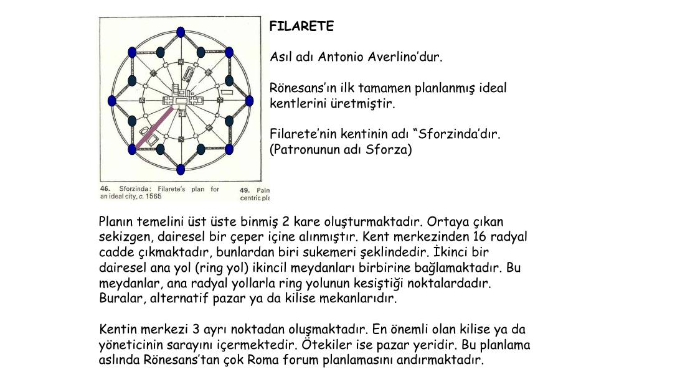
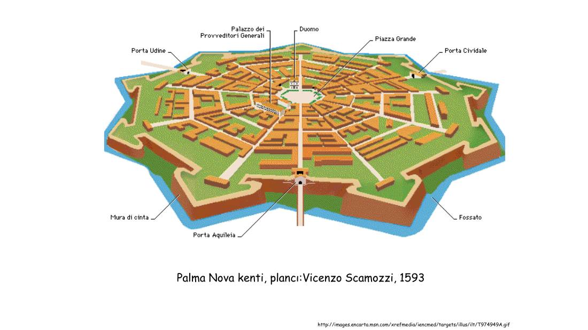
Palmanova (Scamozzi, 1593): Venedik sınır kalesi, dokuz köşeli yıldız, altıgen Piazza Grande, 3 kapı. Diğer önerenler: Fra Giocondo, Maggi, Vasari, Lupicini, Barbaro, Cattaneo, Francesco di Giorgio Martini, Dürer (kare ve dairesel). Uygulananlar: Grammichele (1693, altıgen), Naarden, Neuf-Brisach.
Context: Florence, 1420 · Vitruvius rediscovered c. 1412 · Alberti 1452 · 1453 Istanbul · 1516 More. The ideal city: centre + radial streets + polygonal walls, focused on defence.
Vitruvius: octagonal wall, towers at the corners, gates on 4 sides, forum at the centre, 8 streets aimed at the towers (against adverse winds; also military).
Filarete (Antonio Averlino) – Sforzinda (1460–65): the first fully planned ideal city; named after the patron Sforza. Two overlapping squares → an eight-pointed star, 16 radial streets (one an aqueduct), a ring road, a three-part centre (church/palace + 2 markets) → recalls the Roman forum.
Palmanova (Scamozzi, 1593): Venetian border fortress, nine-pointed star, hexagonal Piazza Grande, 3 gates. Other proposals: Fra Giocondo, Maggi, Vasari, Lupicini, Barbaro, Cattaneo, Francesco di Giorgio Martini, Dürer (square and circular). Built examples: Grammichele (1693, hexagonal), Naarden, Neuf-Brisach.
| Meydan | Özellik |
|---|---|
| Plaza Mayor, Madrid | Dört yanı kapalı dikdörtgen |
| Place Dauphine, Paris | 1613, üçgen; Pont Neuf (1606) için adanın ucu dolduruldu |
| Place des Victoires | Dairesel, ortada heykel |
| Place Vendôme | Köşeleri pahlı, ortada sütun, eksenel |
| Place Louis XV (Concorde) | Madeleine–Rue Royale ve Tuileries–Zafer Takı akslarının kesişimi |
| Campidoglio, Roma | Michelangelo; trapez, oval desen, Marcus Aurelius |
| Amalienborg, Kopenhag | Sekizgen, 4 saray |
| Piazza Navona | Domitianus Stadyumu (MS 86); Bernini Dört Nehir Çeşmesi 1651; Sant'Agnese (Rainaldi, Borromini) |
Sixtus V ve Domenico Fontana (1585–90): hac kiliselerini düz caddelerle bağladı; kavşaklara antik dikilitaşlar dikerek odak yarattı. Sixtus döneminde 4 dikilitaş: Popolo (1589), S. Pietro (1586), Esquilino (1587), Laterano (1588, en uzun, 32,18 m). Piazza del Popolo'dan trident: Via del Corso, Ripetta, Babuino. S. Pietro'nun oval kolonatları Bernini 1656–67.
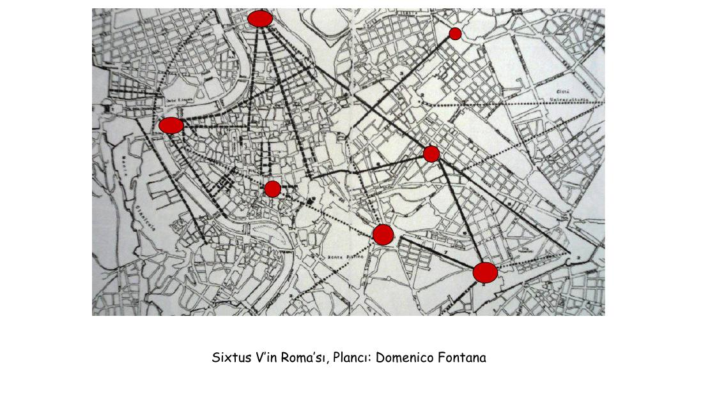
| Square | Feature |
|---|---|
| Plaza Mayor, Madrid | Rectangle closed on all four sides |
| Place Dauphine, Paris | 1613, triangular; the island's tip was filled for the Pont Neuf (1606) |
| Place des Victoires | Circular, statue at the centre |
| Place Vendôme | Chamfered corners, column at the centre, axial |
| Place Louis XV (Concorde) | Crossing of the Madeleine–Rue Royale and Tuileries–Arc de Triomphe axes |
| Campidoglio, Rome | Michelangelo; trapezoid, oval pattern, Marcus Aurelius |
| Amalienborg, Copenhagen | Octagonal, 4 palaces |
| Piazza Navona | Stadium of Domitian (AD 86); Bernini's Fountain of the Four Rivers 1651; Sant'Agnese (Rainaldi, Borromini) |
Sixtus V and Domenico Fontana (1585–90): linked the pilgrimage churches with straight streets and placed ancient obelisks at junctions as foci. 4 obelisks under Sixtus: Popolo (1589), S. Pietro (1586), Esquilino (1587), Laterano (1588, tallest, 32.18 m). From Piazza del Popolo a trident: Via del Corso, Ripetta, Babuino. The oval colonnades of St Peter's: Bernini 1656–67.
Kent mekânı siyasal ve dinsel otoritenin temsil edildiği anıtsal kompozisyondur. Yapılar arasındaki mekân ve görsel ilişkiler de tasarlanır.
6 ilke: merkezilik ve hiyerarşi · aksiyel düzen · perspektif ve vista · geometrik düzen ve simetri · anıtsallık ve temsil · mekânsal deneyim.
Elemanlar: düz, ağaçlı geniş caddeler · trivium / trident (patte d'oie = kaz ayağı) · simetri ve cephe uyumu · geometrik meydanlar · tören aksı · vista · anıtlar ve dikilitaşlar · kot farkının merdiven, rampa ve çeşmeyle kullanımı.
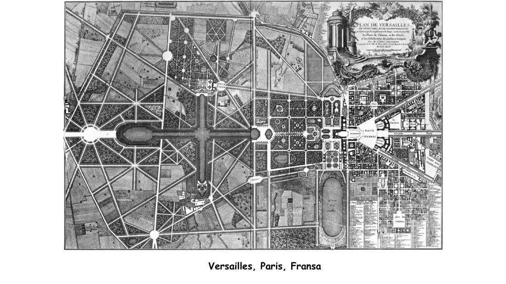
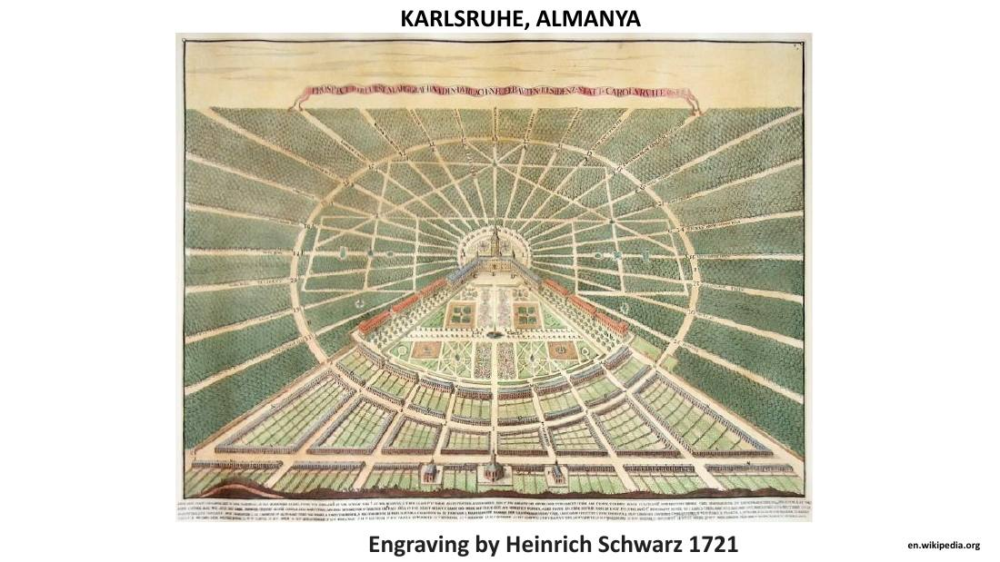
Saray-bahçe: Vaux-le-Vicomte, Versailles, Het Loo, Belvedere (Viyana), Sanssouci (Potsdam). Barok kentler: Versailles, Nancy, Dresden, Karlsruhe, Kopenhag, St. Petersburg, Aranjuez. Günümüz yansıması: Astana (1997).
Urban space is a monumental composition representing political and religious authority. The spaces and visual relations between buildings are designed too.
6 principles: centrality and hierarchy · axial order · perspective and vista · geometric order and symmetry · monumentality and representation · spatial experience.
Elements: straight, wide, tree-lined avenues · trivium / trident (patte d'oie = goose foot) · symmetry and uniform façades · geometric squares · ceremonial axis · vista · monuments and obelisks · use of level changes with stairs, ramps and fountains.
Palace-gardens: Vaux-le-Vicomte, Versailles, Het Loo, Belvedere (Vienna), Sanssouci (Potsdam). Baroque cities: Versailles, Nancy, Dresden, Karlsruhe, Copenhagen, St Petersburg, Aranjuez. Today's reflection: Astana (1997).
Ütopya = mevcut topluma eleştiri + ideal toplum tasarımı. Felsefi (More), sosyal reform (Owen, Fourier), kentsel tasarım (Howard, Garnier). Tepki: toplumsal eşitsizlik, kötü yaşam koşulları, mevcut düzen.
Thomas More, 1516: "güzel yer / hiçbir yer"; hayali ada, 54 şehir, mülkiyet yok, dini hoşgörü, konutlar 10 yılda bir değişir, aynı kıyafet.
Charles Fourier – Phalanstère (1829): phalanx (işbirliği örgütü) + monastère; ~1600 kişi; Versailles'a dayanan "proleter mega saray". 4 kat; orta bölüm sessiz, kanatlar gürültülü. Uygulamalar: North American Phalanx (1844), LaGrange (1843–48), Familistère (Godin, 1856). Topluluklar başarısız oldu ama kolektif konutun önünü açtı.
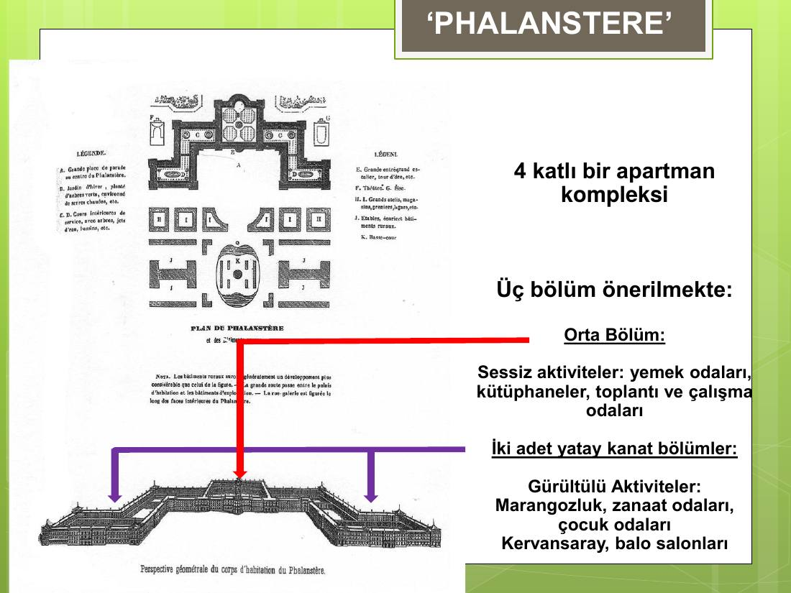
Robert Owen – New Harmony (1825): işadamı, ateist, yenilikçi; üç engel: mülkiyet eşitsizliği, geleneksel din, geleneksel evlilik. 200–3000 kişi, tarımsal, 1–4 kat, kâr paylaşımı.
Utopia = critique of the existing society + design of an ideal society. Philosophical (More), social reform (Owen, Fourier), urban design (Howard, Garnier). A reaction to social inequality, poor living conditions and the existing order.
Thomas More, 1516: "good place / no place"; an imaginary island, 54 cities, no property, religious tolerance, houses exchanged every 10 years, identical clothes.
Charles Fourier – Phalanstère (1829): phalanx (cooperative organisation) + monastère; ~1600 people; a "proletarian mega-palace" based on Versailles. 4 storeys; quiet centre, noisy wings. Realisations: North American Phalanx (1844), LaGrange (1843–48), Familistère (Godin, 1856). The communities failed but paved the way for collective housing.
Robert Owen – New Harmony (1825): businessman, atheist, innovator; three obstacles: inequality of property, traditional religion, traditional marriage. 200–3000 people, agricultural, 1–4 storeys, profit sharing.
Tarih: Parisii → Lutetia ("bataklık"), MÖ 52 Roma fethi; 10–12 bin nüfus; Rue Saint-Jacques = cardo; forum 160 × 100 m; 360'ta Julian, ad "Paris". Kalıntılar: Pilier des Nautes, Arènes de Lutèce, Cluny hamamları.
Gerekçe: 1832 kolera, 1848 ayaklanması, barikatlar; nüfus 1815: 700 bin → 1861: 1,7 milyon.
| Ana hedefler | Araçlar |
|---|---|
| İmparatorluğa yakışan başkent | Eski Paris'i kesen bulvarlar ve düz caddeler |
| Düşük gelir grubunu kontrol | Ulaşımın iyileştirilmesi; anıtların birleştirilmesi |
| Merkezde burjuvaziye mekân | Yeşil alan; sağlıklı altyapı |
350.000 kişi çepere gönderildi. Grande croisée (Rivoli + Sébastopol), yıldız meydanlar (Étoile 12 cadde, Trocadéro, Victor Hugo, Nation), Avenue de l'Opéra, Rue Soufflot vistası, Bois de Boulogne ve Vincennes, Buttes-Chaumont, kanalizasyon.
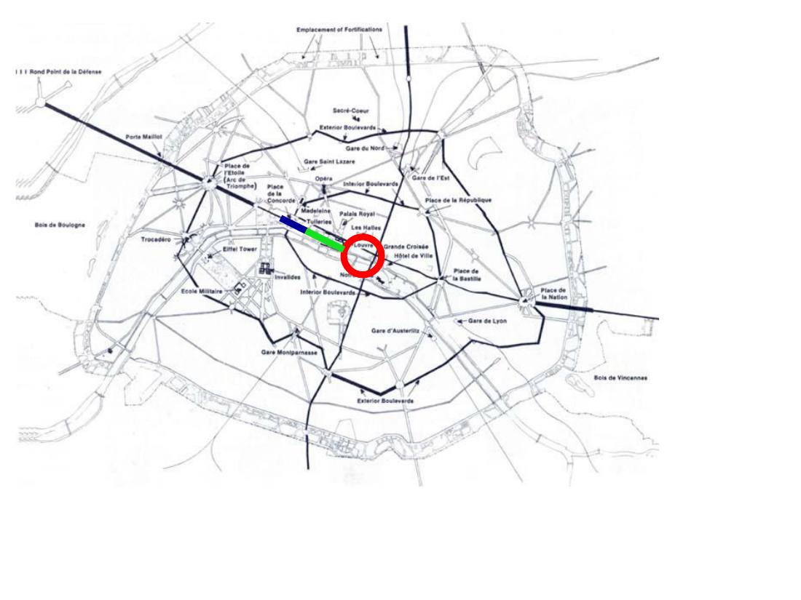
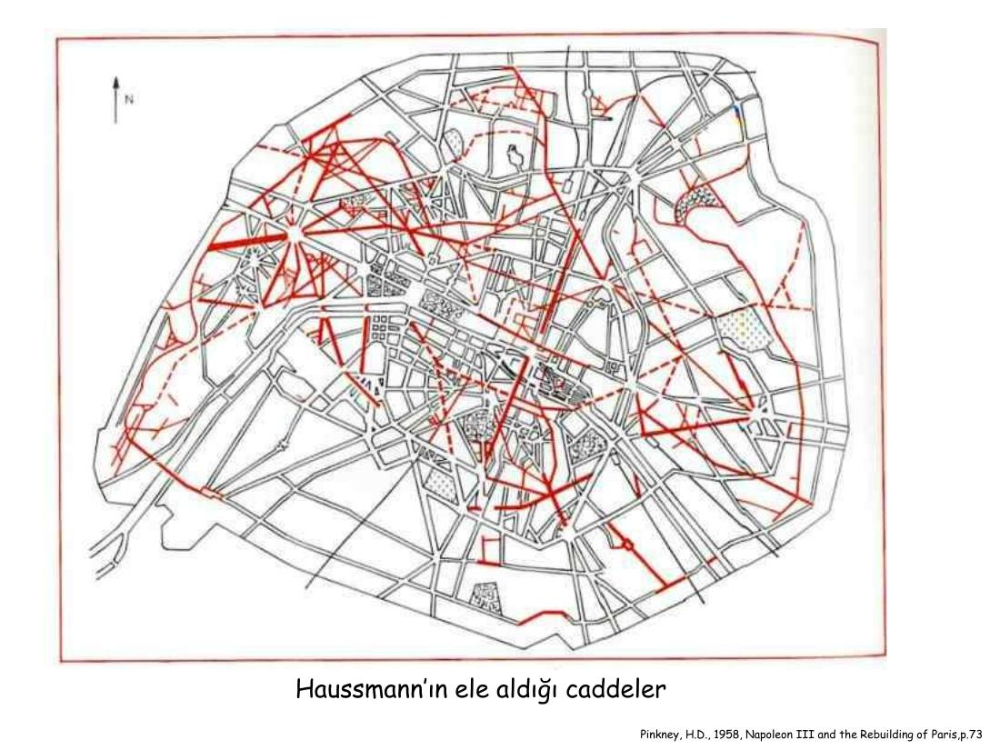
History: Parisii → Lutetia ("marsh"), Roman conquest 52 BC; 10–12 thousand people; Rue Saint-Jacques = cardo; forum 160 × 100 m; in 360 Julian, the name "Paris". Remains: Pillar of the Boatmen, Arènes de Lutèce, Cluny baths.
Reasons: 1832 cholera, 1848 uprising, barricades; population 1815: 700,000 → 1861: 1.7 million.
| Main aims | Tools |
|---|---|
| A capital worthy of an empire | Boulevards and straight streets cutting through old Paris |
| Control of low-income groups | Better transport; linking monuments |
| Bourgeois spaces in the centre | Green space; healthy infrastructure |
350,000 people were pushed to the periphery. Grande croisée (Rivoli + Sébastopol), star squares (Étoile with 12 avenues, Trocadéro, Victor Hugo, Nation), Avenue de l'Opéra, the Rue Soufflot vista, Bois de Boulogne and Vincennes, Buttes-Chaumont, sewers.
Izgara geleneği: Lima 1535 (Laws of the Indies), Manhattan 1811, La Plata 1882. Barcino (Roma castrum'u) → ortaçağ surları → 1808 barok askeri kamp → Eixample = genişleme. Slogan: "Hijyenik, işlevsel, tüm sakinler arasında eşitlik: herkes için eşit hava ve ışık."
| Özellik | Değer |
|---|---|
| Blok | ~113 × 113 m, perimeter block |
| Köşe kesimi | ~20 m |
| Sokak / bulvar | ~20 m / 50–60 m |
Köşeler neden pahlı? Tramvay dönüş yarıçapı · kavşakta görüş · güneş ışığı · havalandırma · kavşakta mini meydan. Zamanla bloklar 4 kenardan kapandı, iç avlular doldu.
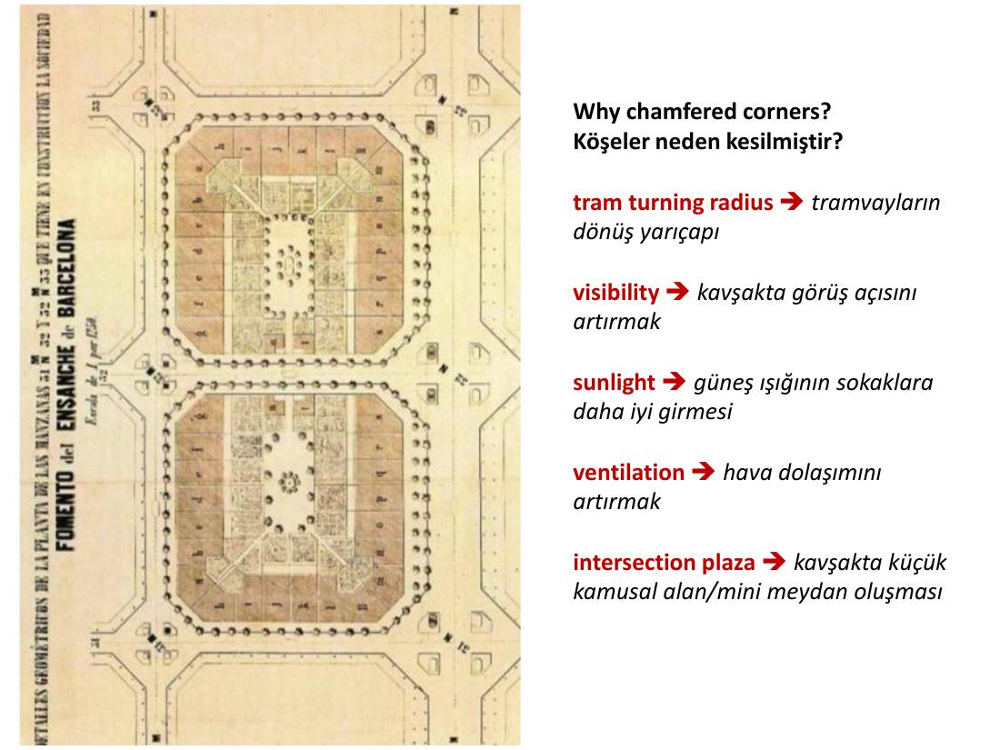
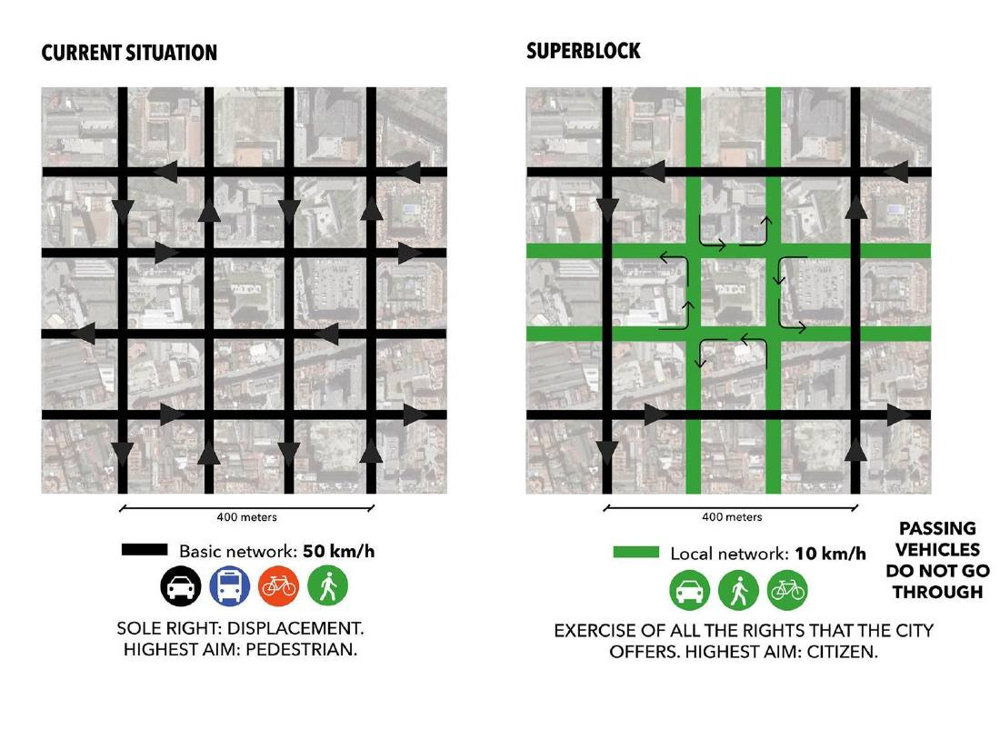
Süperbloklar (PMU 2013–2018): 3×3 blok (~400 × 400 m); transit trafik giremez. Yeşil + dinlenme alanı: Cerdà %34,8 → bugün %0,6 → süperblok %35,6. Örnekler: Poblenou, Sant Antoni, Glòries.
The grid tradition: Lima 1535 (Laws of the Indies), Manhattan 1811, La Plata 1882. Barcino (Roman castrum) → medieval walls → 1808 Baroque military camp → Eixample = extension. Motto: "Hygienic, functional, equality between all residents: equal air and light for everyone."
| Feature | Value |
|---|---|
| Block | ~113 × 113 m, perimeter block |
| Corner chamfer | ~20 m |
| Street / boulevard | ~20 m / 50–60 m |
Why chamfered corners? Tram turning radius · visibility at junctions · sunlight · ventilation · a small plaza at the junction. Over time blocks closed on all four sides and inner courts were built up.
Superblocks (Urban Mobility Plan 2013–2018): 3×3 blocks (~400 × 400 m); through traffic cannot enter. Green + leisure space: Cerdà 34.8% → today 0.6% → superblock 35.6%. Examples: Poblenou, Sant Antoni, Glòries.
Arturo Soria y Mata (1844–1920): fikir 1882, detaylı öneri 1892. Tramvay boyunca doğrusal erişim; "Her aileye bir ev, her eve bir meyve bahçesi ve bahçe". Amaç: kenti kırlaştırmak, kırsalı kentleştirmek.
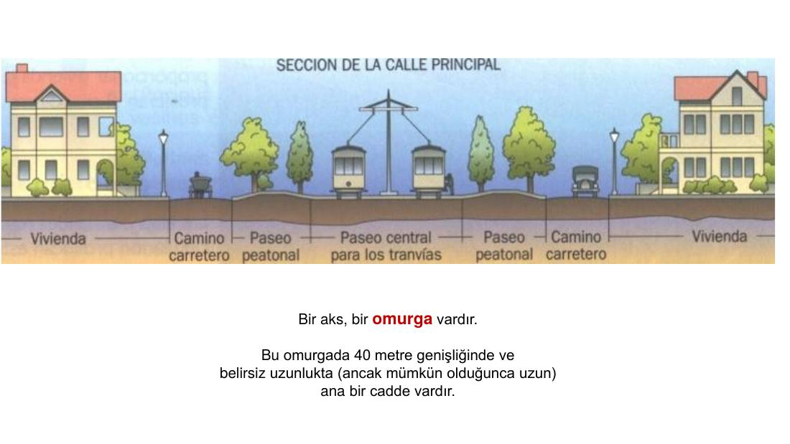
Ana cadde 40 m; ikincil caddeler 20 m, 80–100 m aralıkla; süperbloklar ~80–100 × 200 m. Zenginler ana caddeye, ortalar kesişen caddelere, yoksullar paralel caddelere bakar ama yan yana yaşar. Altyapı caddelerin altında, ağaç sıraları "kentin ciğerleri".
Madrid: planlanan 48 km'nin ilk 5 km'si (1894–1904); atlı tramvay 1909'da elektriklendi; 1934 şirket battı; bugün Arturo Soria metro istasyonu. Etkisi: 1928 Benoît-Lévy'nin Uluslararası Lineer Kentler Derneği, Rus deurbanistleri, Le Corbusier Algiers 1930–31.
Arturo Soria y Mata (1844–1920): idea in 1882, detailed proposal in 1892. Linear access along a tramway; "For every family a house, in every house an orchard and a garden". Aim: to ruralise the city and urbanise the countryside.
Main street 40 m; secondary streets 20 m every 80–100 m; superblocks ~80–100 × 200 m. The rich face the main street, the middle class the cross streets, the poor the parallel streets, yet they live side by side. Infrastructure under the streets; tree rows are "the lungs of the city".
Madrid: the first 5 km of a planned 48 km (1894–1904); horse tram electrified in 1909; the company failed in 1934; today there is an Arturo Soria metro station. Influence: Benoît-Lévy's International Association of Linear Cities (1928), Russian deurbanists, Le Corbusier's Algiers 1930–31.
Arka plan: Engels 1844; 1848; Public Health Act; Richardson'ın Hygeia'sı (1876); Olmsted'in Central Park'ı ve Parks Movement.
Ebenezer Howard (1850–1928): mecliste stenograf. To-morrow 1898 → Garden Cities of To-morrow 1902. Kent-kır, kapitalizm-sosyalizm, gelenek-modernite arasında orta yol. Üç Mıknatıs: Kent, Kır, Kent-Kır.
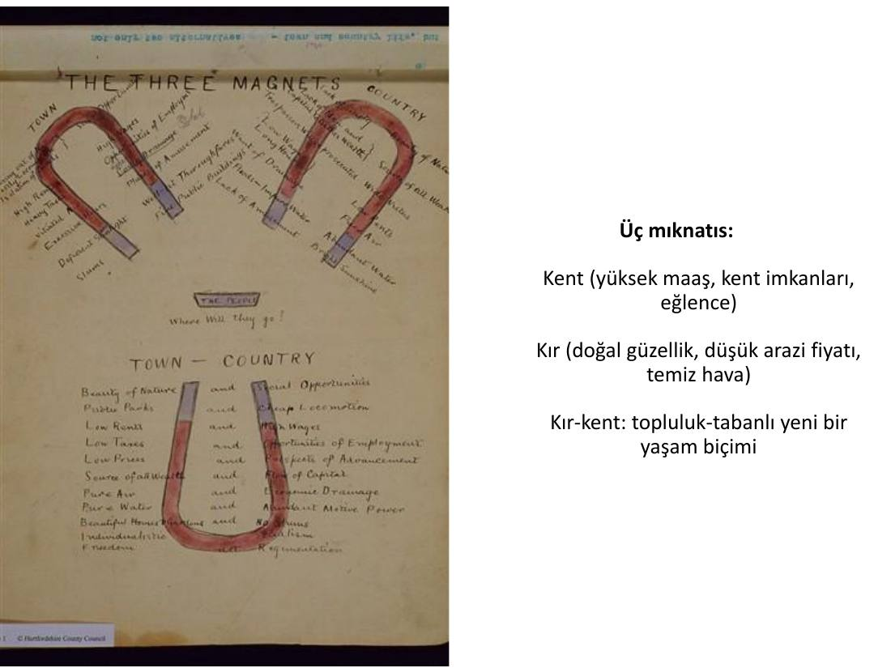
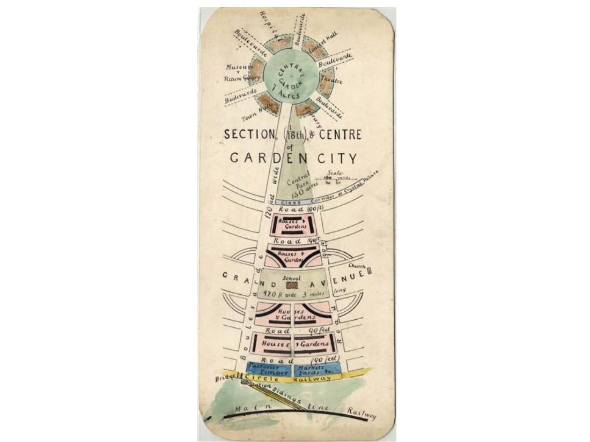
Desantralizasyon: merkez kent 58.000, raylı sistemle bağlı uydu bahçe kentler 32.000 kişi; 1000 akr kent + 5000 akr tarım; merkezde kamu yapıları ve Central Park, Crystal Palace, Grand Avenue, çeperde sanayi ve ~2000 ha yeşil kuşak. "Yalnızca diyagram; plan araziye bağlıdır." Letchworth 1903 (Parker & Unwin), Welwyn 1920 (de Soissons). 1946 New Towns Act.
Avrupa: Garnier'nin Cité Industrielle'i (tek metalürji fabrikası, hiç yapılmadı) · Fritsch'in 1896 Gelecek Kenti (ırkçı, 1 milyon kişi) · Benoît-Lévy bahçe kenti bahçe banliyösüyle karıştırdı · Margarethenhöhe ve Hellerau aslında tramvay ucundaki banliyöler.
Perry'nin komşuluk birimi (1923–29): büyüklüğü ilkokul belirler; okul merkezde, ~400–800 m yürüme; arterler birimin içinden geçmez; dükkânlar köşelerde.
Radburn (1928, Stein & Wright): taşıt-yaya ayrımı; süperblok, cul-de-sac, ortak park, alt geçit. "Otomobile rağmen nasıl yaşarım?"
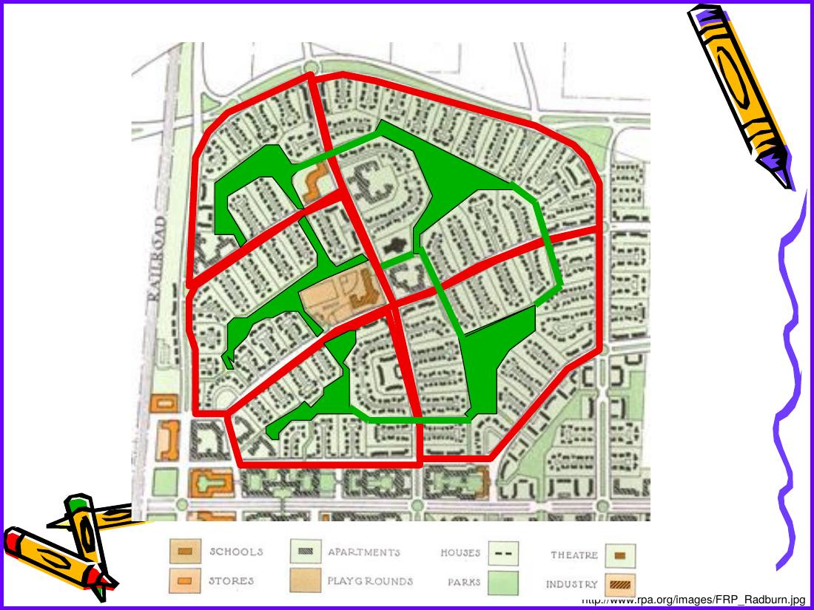
| Problem | Çözüm |
|---|---|
| Sanayi kentinin kaosu | Howard: Garden City |
| Komşuluk kaybı | Perry: Neighbourhood Unit |
| Otomobil | Radburn |
| Modern sanayi üretimi | Garnier |
Background: Engels 1844; 1848; the Public Health Act; Richardson's Hygeia (1876); Olmsted's Central Park and the Parks Movement.
Ebenezer Howard (1850–1928): parliamentary stenographer. To-morrow 1898 → Garden Cities of To-morrow 1902. A middle way between town and country, capitalism and socialism, tradition and modernity. Three Magnets: Town, Country, Town-Country.
Decentralisation: a central city of 58,000, satellite garden cities of 32,000 linked by rail; 1000 acres of town + 5000 acres of farmland; public buildings and Central Park at the centre, Crystal Palace, Grand Avenue, industry and a ~2000 ha green belt at the edge. "A diagram only; plan must depend on site." Letchworth 1903 (Parker & Unwin), Welwyn 1920 (de Soissons). 1946 New Towns Act.
Europe: Garnier's Cité Industrielle (a single metallurgical plant, never built) · Fritsch's City of the Future 1896 (racist, 1 million people) · Benoît-Lévy confused the garden city with the garden suburb · Margarethenhöhe and Hellerau were really suburbs at the end of a tram line.
Perry's neighbourhood unit (1923–29): size set by an elementary school; school at the centre, ~400–800 m walk; arterials never cross the unit; shops at the corners.
Radburn (1928, Stein & Wright): separation of vehicles and pedestrians; superblock, cul-de-sac, shared park, underpasses. "How can we live in spite of the car?"
| Problem | Solution |
|---|---|
| Chaos of the industrial city | Howard: Garden City |
| Loss of neighbourliness | Perry: Neighbourhood Unit |
| The automobile | Radburn |
| Modern industrial production | Garnier |
Tanım: kentsel biçimdeki güzellik yoluyla ahlaki ve sivil düzen arayan reform hareketi (1890'lar–1930'lar). Kökleri: Beaux-Arts (aksiyellik, hiyerarşi, anıtsallık, vista, sanatların bütünleşmesi), Haussmann'ın Paris'i, Viyana Ringstrasse (eski glacis üzerinde). Atina planı 1833.
Önceller: L'Enfant'ın Washington'ı 1791 (Capitol ve Başkanlık Evi odakları), Jefferson'ın Virginia Üniversitesi 1819, Columbia (McKim 1894). Daniel Burnham (1846–1912): 1893 Chicago fuarının Beyaz Kenti, endüstriyel kaosa karşı ahlaki düzen modeli.
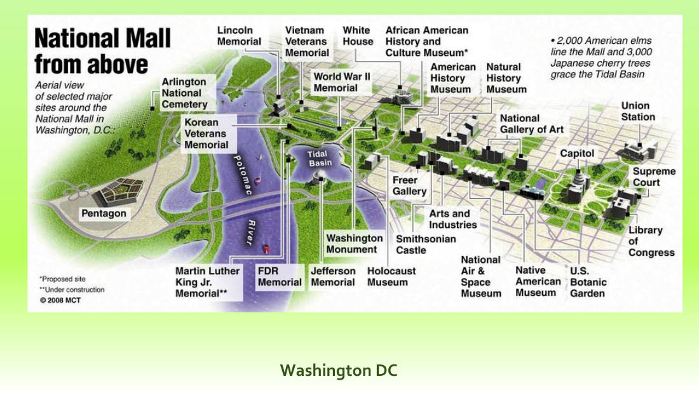
| L'Enfant 1791 | McMillan 1902 | |
|---|---|---|
| Plancı | L'Enfant | Burnham, McKim, Olmsted Jr. |
| Amaç | Demokrasi, açıklık | Ulusal birlik ve ihtişam |
| İlke | Herkes için sivil mekân | Tören aksı, formalite |
| Simge | Halk-devlet eşitliği | Ulus-devletin gücü |
McMillan: Mall 2 kat genişledi, ~2 kat uzadı; Lincoln Anıtı 1922. Diğer planlar: Cleveland 1902 (100 akr slum temizliği), Baguio, Manila 1905, San Francisco 1906, Chicago 1909 ("Haussmann'ın Paris için yaptığı…" → mekânsal determinizm; merkez öğe hiç yapılmadı). Sonrası Edward H. Bennett.
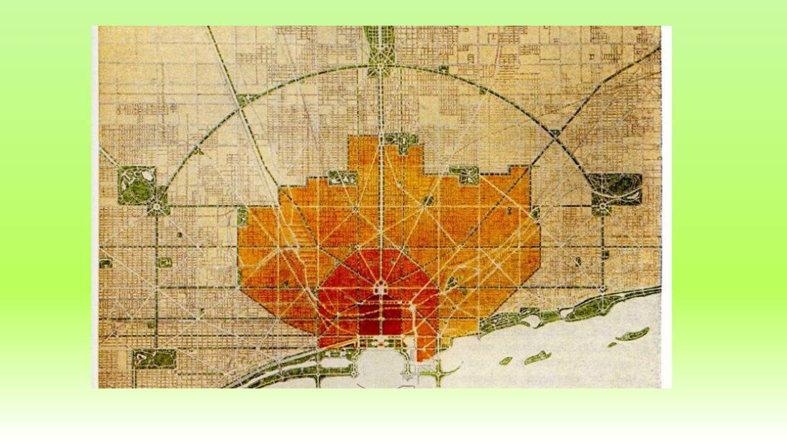
Yayılış: Yeni Delhi 1911–31 (emperyal kontrol) · Canberra (Griffin, 1911 yarışma, 1955'te uygulamaya başlandı; demokratik ideal, "istisnai") · 1930'lar diktatörleri: Mussolini, Franco, Hitler; Speer'in Germania'sında zafer takı 117 m (Arc de Triomphe 50 m).
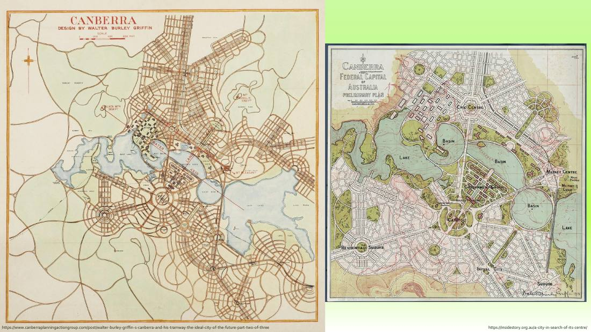
Definition: a reform movement that sought moral and civic order through beauty in urban form (1890s–1930s). Roots: Beaux-Arts (axiality, hierarchy, monumentality, vista, integration of the arts), Haussmann's Paris, the Vienna Ringstrasse (on the former glacis). Plan of Athens 1833.
Forerunners: L'Enfant's Washington 1791 (Capitol and President's House as foci), Jefferson's University of Virginia 1819, Columbia (McKim 1894). Daniel Burnham (1846–1912): the White City of the 1893 Chicago fair, a model of moral order against industrial chaos.
| L'Enfant 1791 | McMillan 1902 | |
|---|---|---|
| Planner | L'Enfant | Burnham, McKim, Olmsted Jr. |
| Purpose | Democracy, openness | National unity and grandeur |
| Principle | Civic space for all citizens | Ceremonial axis, formality |
| Symbol | Equality of people and state | Power of the nation-state |
McMillan: the Mall doubled in width and nearly doubled in length; Lincoln Memorial 1922. Other plans: Cleveland 1902 (100 acres of slum clearance), Baguio, Manila 1905, San Francisco 1906, Chicago 1909 ("The task which Haussmann accomplished for Paris…" → spatial determinism; its central element was never built). Then Edward H. Bennett.
Spread: New Delhi 1911–31 (imperial control) · Canberra (Griffin, 1911 competition, implementation from 1955; democratic ideal, "exceptional") · 1930s dictators: Mussolini, Franco, Hitler; Speer's Germania arch 117 m (Arc de Triomphe 50 m).
69 soru üç seviyeye ayrıldı: önce Kolay ile başla, sonra Orta ve Zor. Her seviyenin ilerlemesi ayrı tutulur. Dil seçiciye göre Türkçe, İngilizce ya da ikisi birden görünür. Şıklar her açılışta karışır.
69 questions in three levels: start with Easy, then Medium and Hard. Progress is kept separately for each level. Use the language switch to show Turkish, English or both. Options are shuffled each time.